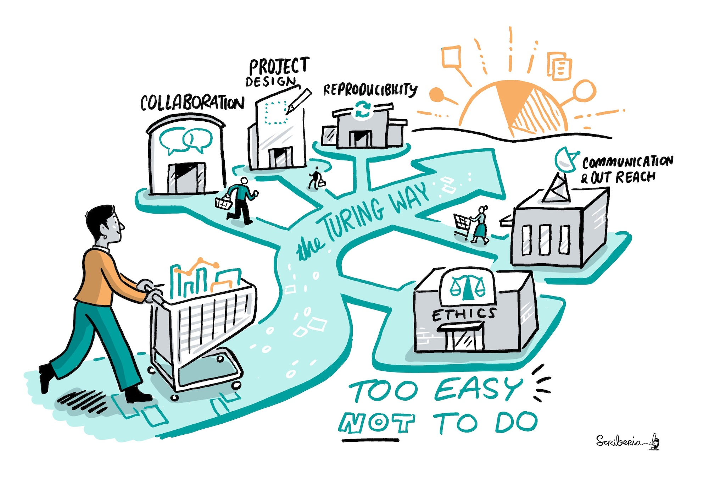

Welcome
Contents
Welcome¶
The Turing Way is an open source community-driven guide to reproducible, ethical, inclusive and collaborative data science.
Our goal is to provide all the information that data scientists in academia, industry, government and in the third sector need at the start of their projects to ensure that they are easy to reproduce and reuse at the end.
The book started as a guide for reproducibility, covering version control, testing, and continuous integration. But technical skills are just one aspect of making data science research “open for all”.
In February 2020, The Turing Way expanded to a series of books covering reproducible research, project design, communication, collaboration, and ethical research.
 |
|---|
The Turing Way project illustration by Scriberia. Zenodo. http://doi.org/10.5281/zenodo.3332807 |
Our community¶
The Turing Way community is dedicated to making collaborative, reusable and transparent research “too easy not to do”. That means investing in the socio-technical skills required to work in a team, to build something greater than the any individual person could deliver alone.
The Turing Way is:
a book
a community
a global collaboration
We hope you find the content in the book helpful. Everything here is available for free under a CC-BY licence. Please use and re-use whatever you need for any purpose.
The book is collaboratively written and open from the start. To make this project truly accessible and useful for everyone, we invite you to contribute your skills and bring your perspectives into this project. To join this community, please read our contribution guidelines and ways to get in touch. More information about the community and the project is available in the Community Handbook. We look forward to expanding and building The Turing Way together.
Although The Turing Way receives support and funding from The Alan Turing Institute, the project is designed to be a global collaboration. We have contributions from across the UK, and from India, Mexico, Australia, USA, and many European countries. Chapters have been written, reviewed and curated by members of research institutes and universities, government departments, and industry. We are committed to creating a space where people with diverse expertise and lived experiences can share their knowledge with others to allow us all to use data science to improve the world.
We value the participation of every member of our community and want to ensure that every contributor has an enjoyable and fulfilling experience. Accordingly, everyone who participates in The Turing Way project is expected to show respect and courtesy to other community members at all times. All contributions must abide by our code of conduct.

Citing The Turing Way¶
All material in The Turing Way is available under a CC-BY 4.0 licence.
You can cite The Turing Way through the project’s Zenodo archive using doi: 10.5281/zenodo.3233853.
The citation will look something like:
The Turing Way Community, Becky Arnold, Louise Bowler, Sarah Gibson, Patricia Herterich, Rosie Higman, … Kirstie Whitaker. (2019, March 25). The Turing Way: A Handbook for Reproducible Data Science (Version v0.0.4). Zenodo. http://doi.org/10.5281/zenodo.3233986
Please visit the DOI link though to get the most recent version - the one above is not automatically generated and therefore may be out of date. DOIs allow us to archive the repository and they are really valuable to ensure that the work is tracked in academic publications.
You can also share the human-readable URL to a page in the book, for example: https://the-turing-way.netlify.app/reproducible-research/overview/overview-definitions.html, but be aware that the project is under development and therefore these links may change over time. You might want to include a web archive link such as: https://web.archive.org/web/20191030093753/https://the-turing-way.netlify.com/reproducibility/03/definitions.html to make sure that you don’t end up with broken links everywhere!
We really appreciate any references that you make to The Turing Way project in your work and we hope it is useful. If you have any questions please get in touch.